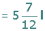

Fraction Word Problems
1 Determine the fraction that matches the description below:
1 Half of a half.
2 Half of a third.
3 A third of a half.
4 Half of a quarter.
2 To prepare a cake, you need:
1/3 of a package of 750 grams of sugar.
3/4 of a kg package of flour.
3/5 of a bar of butter of 200 g.
Find, in grams, the quantities that are needed to prepare the cake.
3 A well contains 150 litres of water. 2/5 of its content is then consumed. How many litres of water are there now in the well?
4 A piece of cloth measuring 48 m in length is cut to 3/4 of its length. How many meters in length are there in the piece that has been removed?
5A family has consumed the following liquids in a summer day:
Two bottles of water each measuring a litre and a half.
4 jars of juice each measuring 1/3 of a litre.
5 cans of lemonade each measuring 1/4 or a litre.
How many litres of liquid have the family drank? Express the result using a mixed number.
6 How many thirds of a litre are there in 4 liters?
7A cable measuring 72 meters is cut into two pieces. One has 5/6 of the original cables length. How many meters of cable are there in each piece?
8A box contains 60 chocolates. Eva ate 1/5 of the chocolates and Ana 1/2.
How many chocolates did Eva eat, and Ana?
What fraction of chocolates have been eaten between them?
9Ana has travelled 600 m on her way to school. This distance is 3/4 of the total distance from her house to the school. What is the total distance from the house to the school?
10Two cars A and B make the same journey of 572 km. At a particular moment, Car A has traveled 5/11 of the trip when the B has traveled 6/13 of it. If the cars continue at the same speed, which of the two will arrive at the destination first? How many miles have been traveled at this particular moment?
11After the ballots have been counted in a villages local election, it is determined that 3/11 of the votes went to Party A, 3/10 for Party B, 5/14 for Party C and the remainder for the Party D. The total number of votes was 15,400. Calculate:
1 The number of votes obtained by each party.
2The number of registered voters who did not cast a ballot if the number of voters who did was 5/8 of the voter registration.
12Helen goes shopping with $180. She spent 3/5 of that amount. How much money is left?
13A few years ago Peter was 24, representing 2/3 of its present age. How old is Peter now?
14A father has divided $1,800 among his sons. The elder received 4/9 of that amount, the middle 1/3 and lower the remainder. How much money did each sibling receive? What fraction of the money was the third amount?
15The budget for a residential complex is distrubted as follows: 2/5 for fuel, 1/8 for electricity, 1/12 in garbage collection, 1/4 in building maintenance and the remainder in cleaning the complex.
1What fraction of the budget is used for cleaning?
2According to the fraction of money distributed, order the items listed above in ascending order.
16Alicia had $300 for shopping. Thursday she spent 2/5 of that amount, and on Saturday she spent 3/4 of what he had left. How much money is spent each day and how much is left at the end?
1
Determine the fraction that matches the description below:
1Half of a half.
2Half of a third.

3 A third of a half.
4 Half of a quarter.
2
To prepare a cake, you need:
1/3 of a package of 750 grams of sugar.
3/4 of a kg package of flour.
3/5 of a bar of butter of 200 g.
Find, in grams, the quantities that are needed to prepare the cake.
3
A well contains 150 litres of water. 2/5 of its content is then consumed. How many litres of water are there now in the well?
4
A piece of cloth measuring 48 m in length is cut to 3/4 of its length. How many meters in length are there in the piece that has been removed?
5
A family has consumed the following liquids in a summer day:
Two bottles of water each measuring a litre and a half.
4 jars of juice each measuring 1/3 of a litre.
5 cans of lemonade each measuring 1/4 or a litre.
How many litres of liquid have the family drank? Express the result using a mixed number.

6
How many thirds of a litre are there in 4 l?
In 1 liter there are three thirds, therefore in 4 liters there will be: 4 · 3 = 12 thirds.
7
A cable measuring 72 meters is cut into two pieces. One has 5/6 of the original cables length. How many meters of cable are there in each piece?
8
A box contains 60 chocolates. Eva ate 1/5 of the chocolates and Ana 1/2.
1 How many chocolates did Eva eat, and Ana?
2 What fraction of chocolates have been eaten between them?
9
Ana has travelled 600 m on her way to school. This distance is 3/4 of the total distance from her house to the school. What is the total distance from the house to the school?

10
Two cars A and B make the same journey of 572 km. At a particular moment, Car A has traveled 5/11 of the trip when the B has traveled 6/13 of it. If the cars continue at the same speed, which of the two will arrive at the destination first? How many miles have been traveled at this particular moment?
Car B will arrive first.
11
After the ballots have been counted in a villages local election, it is determined that 3/11 of the votes went to Party A, 3/10 for Party B, 5/14 for Party C and the remainder for the Party D. The total number of votes was 15,400. Calculate:
1 The number of votes obtained by each party.

2 The number of registered voters who did not cast a ballot if the number of voters who did was 5/8 of the voter registration.
12
Helen goes shopping with $180. She spent 3/5 of that amount. How much money is left?
13
A few years ago Peter was 24, representing 2/3 of its present age. How old is Peter now?
14
A father has divided $1,800 among his sons. The elder received 4/9 of that amount, the middle 1 /3 and lower the remainder. How much money did each sibling receive? What fraction of the money was the third amount?
15
15 The budget for a residential complex is distrubted as follows: 2/5 for fuel, 1/8 for electricity, 1/12 in garbage collection, 1/4 in building maintenance and the remainder in cleaning the complex.
What fraction of the budget is used for cleaning?
According to the fraction of money distributed, order the items listed above in ascending order.
16
Alicia had $300 for shopping. Thursday she spent 2/5 of that amount, and on Saturday she spent 3/4 of what he had left. How much money is spent each day and how much is left at the end?